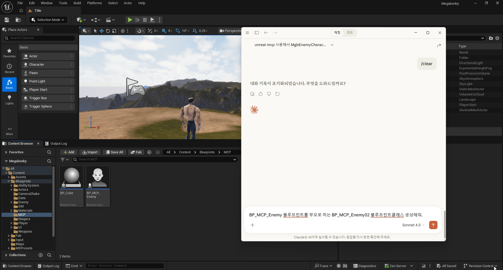
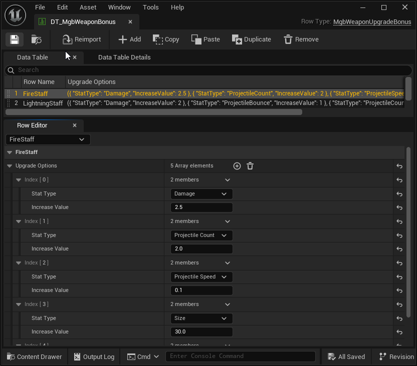
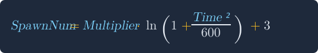
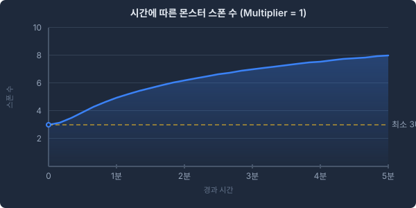
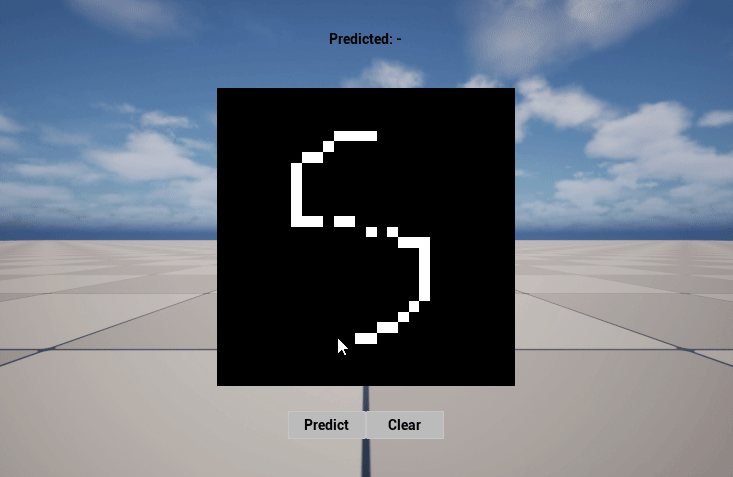
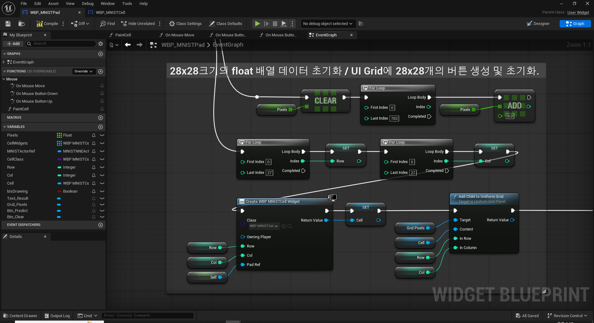
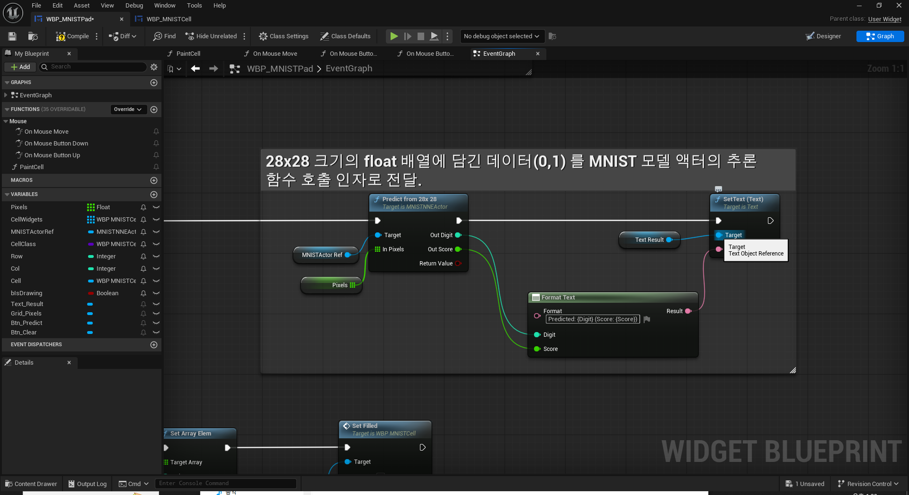

Unreal Engine Programmer
안녕하세요.
지원자 원유찬입니다.
About Me
게임속 NPC들이 진정한 의미의 'AI' 로서 기능하는 순간을 단순히 따라가는 개발자가 아닌 '그 흐름을 이끄는 개발자' 가 되는 것이 저의 목표입니다.
Skills
-
Unreal Engine
GAS -
Network
WinSockFlatbuffersJSON -
MCP
Unreal Editor Automation -
Database
MySQL
Projects
Megabonky GitHub

서버-클라이언트 구조에 대한 깊은 이해를 목표로 진행한 1인 개발 프로젝트입니다.
주요 기능
- MCP에디터 자동화
- GAS캐릭터 능력, 무기 시스템
- JSON웹서버와 게임서버간 HTTP통신
- DB유저 데이터 관리
Technical Implementation
MCP 기반 LLM 을 활용한 에디터 자동화 개선
Claude와 Unreal MCP 플러그인을 연동해 자연어 명령으로 에디터 작업을 수행하고 사용자 정의 C++ 클래스 연동 과정에서 발생한 문제를 해결했습니다.
- 엔진 내장 컴포넌트 부착 오류 개선:
MCP 플러그인에서 제공하는 기본 컴포넌트 부착 명령어가 엔진 내장 컴포넌트에 대해 올바르게 작동하지 않는 문제를 확인하고, 탐색 경로를 올바르게 수정해 모든 엔진 내장 컴포넌트에 대해 정상적으로 부착이 이루어지도록 개선했습니다. - 커스텀 C++ 클래스 탐색 문제 분석 및 수정:
MCP 플러그인에서 블루프린트 생성 시 엔진 기본 클래스만 탐색되던 문제를 확인하고 사용자 정의 클래스를 엔진에 로드된 UClass 오브젝트 풀에서 탐색해 찾을 수 있도록 플러그인의 클래스 탐색 로직을 수정했습니다.커스텀 C++ 클래스를 부모로 BP 클래스 생성 커스텀 BP 클래스를 부모로 BP 클래스 생성 
- 자연어 기반 블루프린트 작성 워크플로우 개선:
클래스 내부의 함수와 변수만 찾을 수 있던 기존 로직을 수정하여 자신 외부 클래스의 변수를 가져오거나, 함수를 호출할 수 있도록 개선했습니다.외부 클래스 변수, 함수 호출
게임 어빌리티 시스템(GAS)사용 게임 매커니즘
- 서버 타이머 기반 어빌리티 활성화:
자동 발동형 어빌리티의 특성을 고려해 서버에서 타이머 기반으로 능력을 활성화했습니다.
- Execution Calculation 활용한 데미지 계산:
데미지 GameplayEffect 적용 시 캐릭터 스탯과 무기 옵션을 함께 고려하기 위해ExecutionCalculation을 사용해 데미지를 계산했습니다.
- 캐릭터 능력치 강화:
무기 강화와 캐릭터 성장에GameplayEffect를 사용해, Attributes 수치(능력치)를 조정시켰습니다.
서버 구조 및 통신
- Network 통신 프로토콜:
클라이언트,게임서버는 웹서버와 RESTful API기반의 HTTP 비동기 통신을, 실시간 게임 플레이는 UDP 기반의 엔진 내장 네트워크(RPC, Replication)기능을 사용하여 통신했습니다. - 데이터베이스 접근 분리:
웹 서버만 DB에 직접 접근하도록 , 웹 서버의 API를 통해 플레이어 데이터를 비동기적으로 로드·저장합니다.

밸런스 및 콘텐츠 관리
- 게임 밸런스 관리:
몬스터 스텟을DataTable과CurveTable로 관리해 게임의 핵심 밸런스를 수정이 편리하도록 설계했습니다. - 랜덤 무기 강화 시스템:
강화 옵션을 데이터로 분리해 관리하고 랜덤 선택된 옵션을 무기에 적용하도록 구현했습니다.무기 강화 옵션 테이블 
- 로그 함수 기반 몬스터 스폰 조절:
로그 함수를 사용해 게임 진행 시간에 따른 몬스터 스폰수가 급격하게 증가하지 않도록 조절했습니다.

Unreal NNE
Unreal Engine의 NNE(Neural Network Engine) 플러그인을 활용하여, 미리 학습된 AI 모델을 엔진에 삽입한 후 추론 단계를 거쳐 값을 도출해 내는 과정을 통하여 AI를 언리얼 엔진과 접목시켜 활용했습니다.
추론 단계에서 필요한 데이터의 입력 형태 지정과, 추론을 통해 도출된 값의 후처리 단계를 처리합니다.



// 모델마다 입력받는 데이터의 형식이 있다.
// {1,1,28,28} => 배치크기, 채널, 세로, 가로
// 한번에(1) (1)개 채널의 28x28 데이터를 넣겠다.
TArray<uint32> Dims = { 1, 1, 28, 28 };
TArray<UE::NNE::FTensorShape> InputShapes;
InputShapes.Add(UE::NNE::FTensorShape::Make(Dims));
const auto ShapeStatus = ModelInstance->SetInputTensorShapes(InputShapes);
// 0부터 9까지 순서대로 점수를 비교해서 최고 점수인 숫자를 반환.
OutDigit = PredDigit;
OutScore = Best;